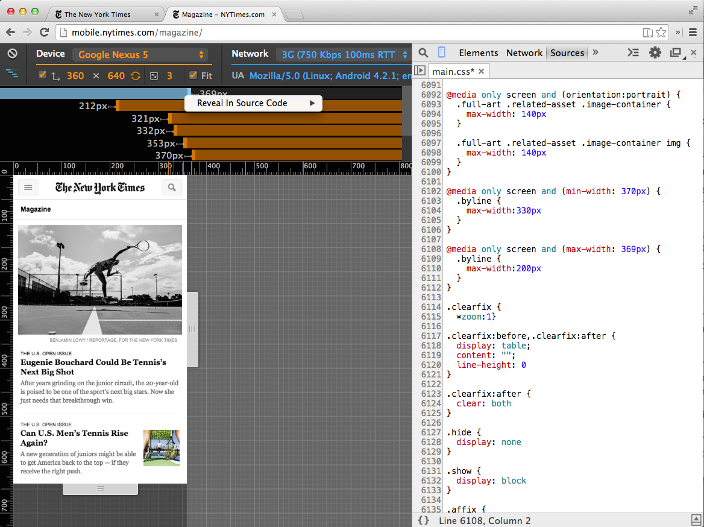
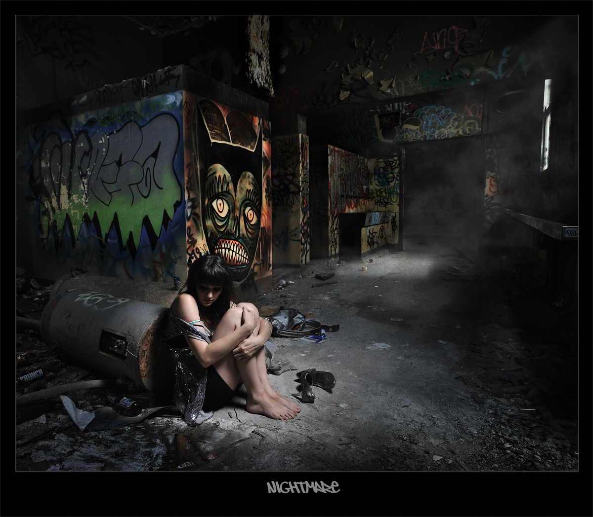

Hybrid Gone Wrong
Lessons learned developing a hybrid app
Created by Jared Siirila / @jtsiirila
Bio
Say something witty about myself
Our first app
None of us were seasoned JavaScript/web developers
But, we accomplished the most important thing...
We shipped
Architecture
Use an MV* architecture
- MVC - Model View Controller
- MVP - Model View Presenter
- MVVM - Model View View Model
- HMVC - Hierarchical Model View Controller
- Etc...
Model
Model
View
Templates are your friend
Controller
Framework Selection
Good Idea - Select a framework based on your existing skills, requirements, and features
Bad Idea - Select a framework for non-technical reasons
Framework considerations
- Mobile support
- Performance
- Ease of use
- Maturity
- Community
For a first app use a full featured MV* framework
Good frameworks include


With more experience you might also consider combining libraries to build a framework
Packaging and Building
Spend the time to make builds fast
How fast?
< 1 minute
why?
- Set ambitious targets
- Attention Span
- On device testing
- Fail fast
- Avoid multi-tasking

How
- Partial builds
- Parallel build steps
- Faster build tools
What if we can't get our builds that fast?
Find ways to test changes that don't require full builds
PhoneGap/Cordova prerequisites

- Platform SDKs (i.e. Android SDK)
- For Android testing, a connected Android device or configured Android emulator
- npm, node, and Android tools in your path
Installing PhoneGap/Cordova
npm install -g cordova
First App
cordova create my-app
cd my-app
cordova platform add android
cordova build
cordova emulate android
Using your own web code
Replace the content of the www directory with your content
Example
Alternatively, use Adobe PhoneGap Build
Cloud based builds
Support for pushing updates to devices during testing
Testing
Would you say I have a plethora of testing options?
Oh yes, you have a plethora.
What is a plethora?
- Desktop Browser
- Mobile Browser
- Official Emulator/Simulator
- 3rd Party Emulators/Simulators
- Physical Devices
- PhoneGap Developer App
- Cloud Services
Test with a desktop browser first
Why?
Powerful emulation DevTools in Chrome
Desktop browser drawbacks
- Useless for performance testing
- Misses WebView/browser/vendor/device specific issues
- These accounted for >50% of our defects
- Hard/impossible to test device features
Emulators & Simulators
iOS Simulator

Android Emulator
Android Emulator Alternatives
Physical Devices
Phonegap Developer App

Cloud Services
- Samsung Device Lab
- Keynote/DeviceAnywhere
- Sauce Labs
- BrowserStack
- Test Object
- Many more, and more available all the time...
Debugging
3 years ago
Now
iOS
Since iOS 6, it's easy to connect to desktop Safari to debug
Android
As of 4.4 desktop Chrome DevTools can debug a webview
Alternative debugging tools
Weinre
- useful for debugging older versions of Android and iOS
- Similar to the built in debugging tools, but with more limited function
- A little difficult to setup and use
GapDebug
Looks promising
Performance
Performance
Performance
Are hybrid apps slow?
Yes
Compared to native apps
Photo Credits